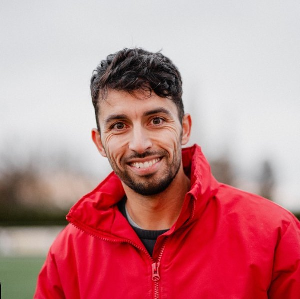
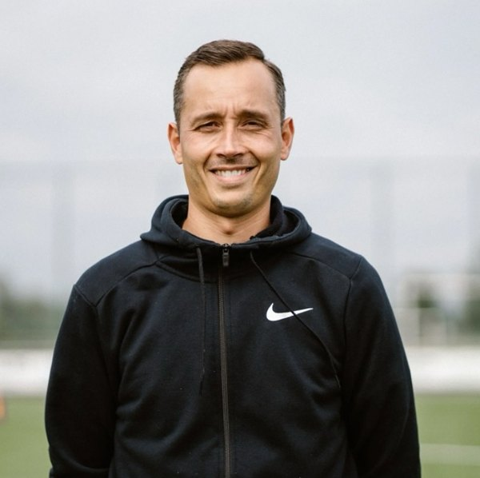

Winterstop
Een ideaal moment om aan je techniek te werken. Data, uren en prijs maken we binnenkort bekend via Instagram.
- Wanneer
- Winterstop 2026–2027
- Waar
- Grotestraat 147, Maasmechelen
- Plaatsen
- Beperkt, kleine groepen
Individueel of met een paar spelers. We werken aan de punten waar jouw kind het meest aan heeft.
Wekelijkse trainingen in kleine groepen, zodat elke speler veel aan de bal is en de trainer iedereen kan bijsturen.
Als de competitie stilligt, trainen wij door. Een reeks trainingen op korte tijd, ideaal om een sprong vooruit te maken.
Twee keer per jaar organiseren we een stage: in de winterstop en in juni, na het seizoen.
Een ideaal moment om aan je techniek te werken. Data, uren en prijs maken we binnenkort bekend via Instagram.
De editie van juni 2027 volgt in het voorjaar.

HoofdtrainerMohamed Alajdi El Idrissi voetbalt sinds zijn vijfde. Hij volgde zijn jeugdopleiding bij Patro Eisden en op de topsportschool voetbal. Daar leerde hij wat topsport vraagt: discipline, herhaling en oog voor detail. Als papa zag hij langs de zijlijn hoe belangrijk goede technische begeleiding op jonge leeftijd is, en zo werd hij trainer.
Jonge voetballers helpen groeien, met techniek als fundament en de juiste topsportmentaliteit.

HoofdtrainerNiels Stouten is al 32 jaar actief in het voetbal. Ook hij komt uit de jeugdopleiding van Patro Eisden en speelde daarna in België en Nederland. Jarenlang zaalvoetbal gaf hem een sterk gevoel voor techniek. Hij is ook trainer van de U7 bij Boorsem Sport.
Techniek en plezier staan centraal, maar respect voor elkaar komt op de eerste plaats.
Ervaringen van ouders en spelers vind je in de highlight "Ervaringen" op ons Instagram-profiel.
Bekijk de ervaringenBel of stuur een bericht via Instagram. Vertel hoe oud je kind is en bij welke ploeg het speelt, dan zoeken we de juiste training.